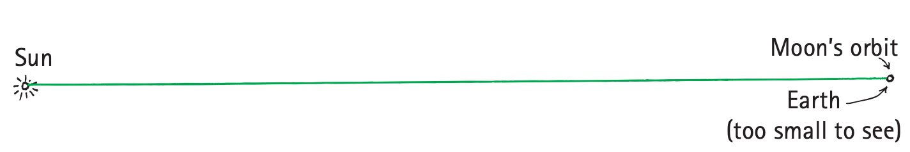

Thinking Like a Physicist
Mathematical idea: A useful mathematical relationship organizes measurements so that a claim can be checked against evidence.
You will follow examples in which small measurements—shadows, angles, and apparent sizes—are used to reason about objects as large as Earth, the Moon, and the Sun. Then you will connect that style of reasoning to hypotheses, laws, theories, and testable claims.
Learning Target
Students will explain how physics uses observation, measurement, evidence, models, and testable claims to understand the natural world.
I can statements
- I can distinguish between an observation, inference, hypothesis, law, and theory.
- I can explain why a claim must be testable to be scientific.
- I can use evidence from a short scenario to decide whether a physics explanation is supported.
- I can explain why formulas in physics are guides for thinking, not just tools for calculation.
Vocabulary
These are words you will see in this section. Do not define them yet.
- measurement
- observation
- inference
- hypothesis
- evidence
- scientific theory
- scientific law
- testable claim
- model
Use the preview activity to decide which words you already know, recognize, or do not know yet. Watch for these words in bold as you read.
Preview: Skim Before You Read
Directions
Before reading closely, skim the vocabulary list and the section. Look at titles, headings, bold words, pictures, captions, diagrams, tables, and formulas. Do not try to understand everything yet. Your job is to notice what already looks familiar and make predictions about what this section may explain.
Step 1 — Sort the vocabulary. Write each vocabulary word in the column that best matches what you know right now. You may move a word later.
| Know for sure | Recognize | Don’t know yet |
|---|---|---|
Step 2 — Skim the section. Record what catches your attention before you read closely.
| What I noticed | |
|---|---|
| What I predict | |
| What I wonder |
Content: Read, Look, Annotate, Apply
Directions
Read in short chunks. Annotate the prose and the figures together: underline evidence, circle or highlight bold vocabulary, label arrows or measured features, connect a sentence to an image, and write short questions or connections in the margins.
Reading 1: Measurements turn observations into evidence
Physics begins with careful observation, and observation becomes much more powerful when it can be measured. A measurement gives a comparison that other people can record, repeat, and discuss. Instead of saying that a shadow is “small,” for example, a scientist can compare the shadow length with the height of the object that casts it or measure the angle made by the incoming sunlight.
Eratosthenes used this kind of reasoning more than two thousand years ago. He knew that near Syene the noon Sun on the summer solstice could shine almost straight down a deep well. At the same time in Alexandria, farther north, a vertical pillar cast a measurable shadow. The difference between the two locations was not treated as a curiosity; it became evidence that could be connected to the shape and size of Earth.

Image read: Trace the verticals toward Earth’s center and the nearly parallel sunlight. Mark the measured angle and explain why that small angle can represent a fraction of the whole Earth.
At Alexandria, the shadow corresponded to an angle of about 7.1 degrees, close to one-fiftieth of a complete circle. Eratosthenes reasoned that if the Sun’s rays arriving at the two cities were nearly parallel and the vertical lines at both places pointed toward Earth’s center, then the angle at Alexandria represented the same fraction of Earth’s full circle. With the distance between the cities known, the much larger circumference of Earth could be inferred.
The important scientific move is the separation between what was directly observed and what was inferred. The shadow, its length, the time of day, and the distance between cities are observations or measurements. The conclusion about Earth’s circumference is an inference supported by those measurements and by a geometric model. A strong scientific explanation makes that chain visible instead of treating the conclusion as an unsupported fact.

Image read: Notice what can actually be seen during an eclipse—the Moon entering Earth’s shadow—and distinguish that observation from the size conclusion scientists build from it.
Stop and Discuss
- Which parts of the Eratosthenes explanation are direct observations or measurements, and which part is an inference?
- Choose one feature in the Eratosthenes figure and explain how it acts as evidence for the model.
Teacher answer / support: Expected discussion: observations include the shadow, angle, time, and city distance; the Earth-size conclusion is an inference. Listen for students using the parallel Sun rays and matching central angle as the model connection.
Example 1: Observation or inference?
A student writes: “The pillar in Alexandria casts a shadow at noon, so Earth must be curved.” Identify the direct observation, identify the inference, and name one measurement that makes the inference stronger.
Teacher answer / support: Observation: the pillar casts a measurable shadow at a specified time. Inference: Earth is curved / the angle represents part of Earth’s circumference. Stronger evidence includes the measured shadow angle and the measured distance between Alexandria and Syene.
You Try It 1: Evidence from an eclipse
During a lunar eclipse, a student sees the Moon move into Earth’s shadow. State one observation that could be recorded and one inference that could be supported by the shape or width of that shadow.
Teacher answer / support: Observation: the Moon enters a visible curved shadow and the shadow width can be compared with Moon diameters. Inference: Earth is larger than the Moon and the shadow geometry can be used to estimate relative size. Accept equivalent source-grounded statements.
Reading 2: Models connect reachable measurements to unreachable distances
Many important quantities in physics cannot be measured by simply placing a ruler beside the object. The Earth, Moon, and Sun measurement examples show how scientists work around this problem. They measure something accessible—an apparent size, a shadow, an angle, or a time—and use a model to connect that small measurement to a much larger distance or diameter.
The Earth–Moon–Sun diagrams are simplified on purpose. A model does not have to look exactly like reality in every detail. It has to preserve the relationships that matter for the question. In a scale or geometry model, the useful features may be the relative directions of rays, the shape of a shadow, or the way apparent size changes with distance. Details that do not affect the reasoning can be left out.

Image read: Identify which size and distance relationships the diagram is trying to preserve. Circle one part that is clearly simplified rather than literal.
One image uses a coin and the Moon to make apparent size concrete. A nearby small object can cover a distant large object if the ratio between size and distance is similar. That does not mean the coin and Moon are the same size. It means the observer sees them under similar angles. This simple setup gives students a physical way to think about how angular size carries information about distance and diameter.

Image read: Compare the small nearby coin with the large distant Moon. Annotate why equal apparent size does not mean equal actual size.
A second geometric example uses the half-Moon position. When a particular arrangement of Earth, Moon, and Sun creates a right-angle relationship, a measured angle from Earth can be connected to the large triangle formed by the three bodies. The details of the ancient measurement were difficult, but the reasoning pattern is important: identify a measurable feature, represent the situation with a model, and then use the relationship in the model to infer something that cannot be measured directly.

Image read: Mark the measured angle and the triangle it belongs to. Write one sentence explaining how the diagram converts an angle into information about distance.
This is also why formulas in conceptual physics should be read as guides for thinking. A formula is a compact model of how quantities relate. Before substituting numbers, ask what each quantity represents, what evidence supplied its value, and what assumptions make the relationship useful. A calculation can be neat and still be scientifically weak if the measurements or assumptions behind it are poor.
Stop and Discuss
- Why is a simplified model useful even though it does not reproduce every detail of the real Earth–Moon–Sun system?
- Choose either the coin–Moon or half-Moon figure. What is measured directly, and what larger quantity is being inferred?
Teacher answer / support: Look for “measure directly → represent with a model → infer an inaccessible quantity.” A good response notes that scale/geometry models preserve selected relationships, not every visual detail.
Example 2: Read a scientific model
Study the Earth–Moon–Sun scale diagram. Identify two relationships the diagram is meant to represent and one feature that is simplified. Explain why the simplification does not automatically make the model useless.
Teacher answer / support: Possible relationships: relative sizes, relative distances, alignment/geometry. Simplifications may include compressed distances or not-to-scale object sizes. The model is useful if the relationship needed for the reasoning is preserved.
You Try It 2: A small object models a distant one
A coin held at arm’s length just covers the Moon. Explain what this observation tells you about apparent size and why a model is still needed before making a claim about the Moon’s actual diameter or distance.
Teacher answer / support: The coin and Moon have similar apparent/angular size from the observer’s position, not similar actual size. To infer actual size or distance, students need a relationship involving the coin’s size/distance and an assumption/model connecting the ratios.
Reading 3: Scientific claims must be testable and open to revision
There is no single rigid scientific method that every scientist follows like a recipe. Scientists often recognize a question, propose a hypothesis, predict what should happen if the idea is correct, and compare the prediction with experiments or calculations. But discovery can also come from trial and error, unexpected observations, or experiments done before a complete hypothesis exists. The deeper pattern is an attitude of inquiry, integrity, and willingness to admit error.
A scientific hypothesis is not just any idea. It must be testable in a way that could reveal that it is wrong. This requirement matters because evidence has to be able to challenge a claim, not merely be collected after the fact to support it. A claim can be scientific and still turn out to be false. In fact, being open to possible failure is part of what makes the claim scientifically useful.
The history of science uses the contrast between authority and experiment to make this point. An idea does not become correct because an important person said it or because many people have repeated it. If repeatable evidence contradicts a claim, the claim must be changed or abandoned unless the new evidence itself fails when checked. Scientific explanations become stronger through this repeated comparison with evidence.
The word theory also has a special meaning in science. A scientific theory is not merely a guess; it brings together a large body of information and well-tested hypotheses. Theories can be refined as new evidence appears. A scientific law or principle summarizes a relationship or pattern that has been repeatedly supported. Neither label makes an idea immune to evidence. The scientific attitude puts improving explanations above defending them.
This same attitude explains why conceptual physics focuses on understanding relationships before rushing into computation. A formula can organize evidence and express a relationship concisely, but the symbols only have scientific meaning when students understand what was measured, what was assumed, and what result would count as evidence against the model.

Image read: Use this image as a final check on scientific reasoning: identify what would have to be measured, what relationship is assumed, and what result would make you question the model.
Stop and Discuss
- Why can a hypothesis be scientific even if later evidence shows that it is wrong?
- How is a scientific theory different from the everyday phrase “just a theory” in scientific usage?
Teacher answer / support: Key idea: science requires possible wrongness. Theories synthesize broad, well-tested evidence and can be refined. Laws/principles summarize supported regularities. Authority alone is not evidence.
Example 3: Which claim is scientific?
Compare these claims: A) “Objects released near Earth follow a measurable falling pattern.” B) “An undetectable essence controls every falling object.” Which claim can function as a scientific claim? Explain what could be observed or measured to test it.
Teacher answer / support: Claim A is scientific because measurable observations can support or contradict it. Claim B is not scientifically testable as written because “undetectable” removes any possible observation that could show it false.
You Try It 3: Design a testable claim
Write one physics claim that could be tested. Then describe one possible observation or measurement that would count against your claim if it occurred.
Teacher answer / support: Accept many answers if the claim has a clear observable test and the student names a result that would contradict it. Press students who only describe evidence that would support the claim.
Vocabulary: Define the Terms
You have now seen these words in the reading, images, and practice. Use this table to consolidate the physics meaning of each term.
| Vocabulary term | Definition |
|---|---|
| measurement | A quantitative description made with a number, a unit, or another agreed-upon scale. |
| observation | Something directly noticed, recorded, or measured. |
| inference | A conclusion or explanation built from observations and evidence. |
| hypothesis | A proposed explanation or prediction that can be tested and could be shown to be wrong. |
| evidence | Observations or measurements used to support, challenge, or revise a claim. |
| scientific theory | A broad explanation that brings together a large body of well-tested scientific information. |
| scientific law | A general rule or principle that summarizes a pattern repeatedly supported by evidence. |
| testable claim | A statement that can be checked against evidence in a way that could show the statement is wrong. |
| model | A simplified representation or relationship used to describe, explain, or predict a physical situation. |
Summary
- Physics uses measurements to make observations more precise and shareable.
- An observation is directly noticed or measured; an inference is a conclusion built from evidence and a model.
- Models and formulas organize relationships so scientists can reason from accessible measurements to quantities that may be difficult to measure directly.
- A scientific hypothesis or claim must be testable in a way that could show it to be wrong.
- Scientific laws, principles, and theories remain accountable to evidence; changing an explanation when strong evidence requires it is a strength of science.
Teaching note: Listen for a chain of reasoning: direct observation/measurement → evidence → model/relationship → inference or claim → test against additional evidence.
Common Mistakes
| Mistake | Why it is tempting | Check instead |
|---|---|---|
| Calling an inference an observation | The conclusion may seem obvious once the evidence is explained. | Ask: Could a camera or measuring tool record this directly, or am I explaining what the observation means? |
| Treating a model as a perfect copy of reality | Diagrams often look like pictures of the real system. | Identify which relationship the model preserves and which details are simplified. |
| Calling any guess a scientific hypothesis | Everyday language uses “hypothesis” for almost any idea. | Name a test that could produce evidence against the claim. |
| Thinking “theory” means an untested guess | That is a common everyday use of the word. | In science, look for a broad explanation built from a large body of tested information. |
| Using a formula without checking its meaning | Substitution can feel like proof. | State what each quantity represents, where the values came from, and what assumptions connect them. |
A student records the length of a shadow and then concludes that the Sun is not directly overhead. Label the recorded shadow length as an observation/measurement or an inference, and label the conclusion as an observation/measurement or an inference.
A classmate says, “My explanation is scientific because nobody has proved it wrong.” Explain why that statement is not enough. Describe what must be true about the claim for it to be scientifically testable.
What is one thing you learned in this section? Explain it in at least one complete sentence.
What is one thing from this section you still need to understand or practice more? Be specific.